Bleak Forest
Dice Roller
The Bleak Forest Engine needs only two dice: the d20 for checks and saves, and the d6 for pools such as the Danger Die, Forage and Mishaps.
d20
d6
Added to each d20. With no d20, added to the d6 total.